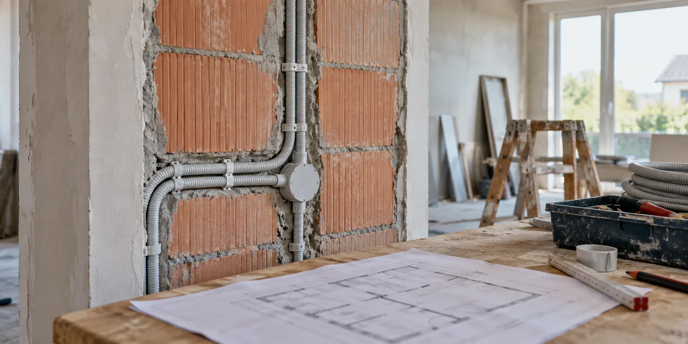

Toon de toekomstige installatieplaatsen
Bespreek mogelijke omvormerlocatie, dakvlakken en elektrische kast met de betrokken vakmensen. Vraag of de voorbereiding past bij een realistische toekomstige installatie, niet alleen bij één voorgesteld toestel. Een eenvoudige schets maakt duidelijk waar bouwkundige en elektrische werkzaamheden elkaar raken.
Laat doorvoeren onderdeel van de opdracht zijn
Bij een dakdoorvoer zijn water- en luchtdichte aansluitingen belangrijk. Vraag wie ze maakt en wie ze controleert. Laat bestaande dakdetails niet openbreken zonder afstemming met de dakwerker. Ook bij een lege voorziening moet helder zijn hoe de tijdelijke situatie wordt afgewerkt totdat de PV-installatie er komt.

Bewaar de voorbereiding in je dossier
Fotografeer routes vóór afwerking en noteer welke voorzieningen daadwerkelijk zijn gemaakt. Vraag aan de latere installateur wat bruikbaar is en wat opnieuw beoordeeld moet worden. Een voorbereiding is geen garantie dat elk toekomstig systeem past. Ze is vooral waardevol wanneer haar ligging en uitgangspunten terugvindbaar zijn.
Houd rekening met toegang na afwerking
Vraag welke onderdelen later bereikbaar moeten blijven voor montage of controle. Laat een voorziening niet verdwijnen achter vaste afwerking zonder documentatie. Bespreek ook of de geplande technische ruimte geschikt blijft als je er andere apparatuur plaatst. Het ontwerp kan later nog veranderen, maar met foto’s, maten en een duidelijke routebeschrijving kan de installateur beoordelen wat bruikbaar is. Dat is betrouwbaarder dan de herinnering dat er ergens een lege buis zou liggen.
Een praktisch voorbeeld
Je renoveert de zolder en wilt pas later PV. Met een vooraf besproken route voorkom je mogelijk nieuwe ingrepen in afgewerkte kamers. De installateur moet de elektrische uitvoering later nog ontwerpen.
Illustratief scenario, geen klantcase.
Neem dit mee naar je gesprek
- Technische ruimte en dakvlak besproken
- Doorvoeren ontworpen door vakmensen
- Tijdelijke afwerking vastgelegd
- Route vóór afwerking gefotografeerd
Veelgestelde vraag
Kan ik zelf alvast een willekeurige kabel voorzien?
Laat type, route en uitvoering vooraf beoordelen. Een verkeerde voorbereiding kan later onbruikbaar zijn.
Bron en achtergrond
Buildwise: officiële of technische achtergrond bij dit onderwerp ↗
Geraadpleegd op 13 oktober 2026. De praktische checklist en het voorbeeld zijn redactionele uitwerkingen. Fabrikantinformatie geldt voor de beschreven producten; ze is geen algemene garantie voor andere systemen.
Wat betekent dit voor jouw woning?
Gebruik de calculator voor een eerste indicatie. Een vakman beoordeelt jouw situatie en bevestigt de uitvoering en definitieve prijs.
Bekijk de zonnepanelencalculator →